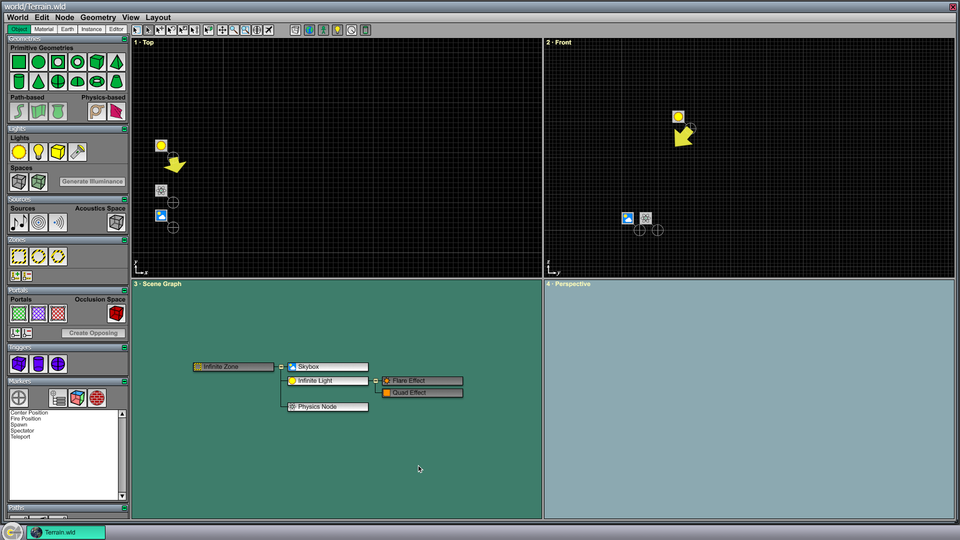
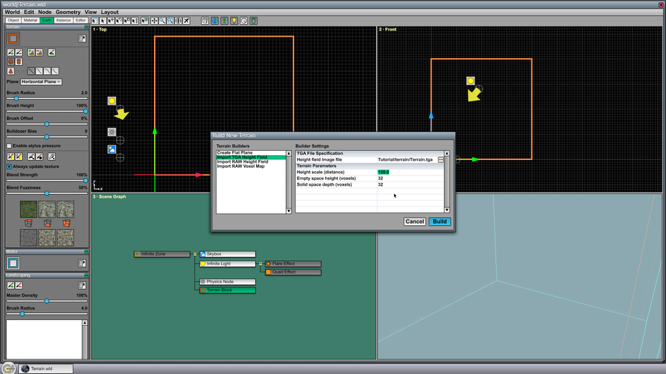
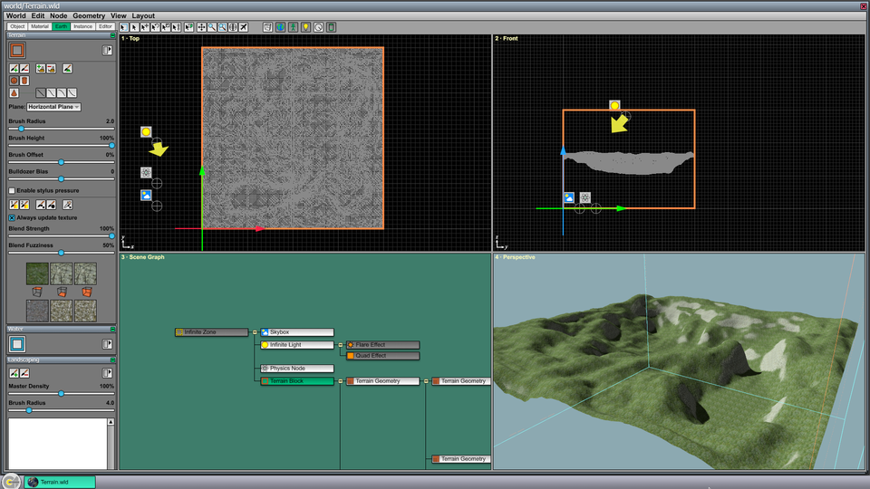
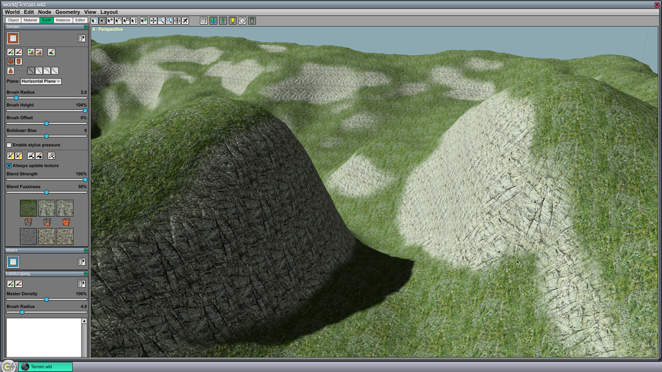
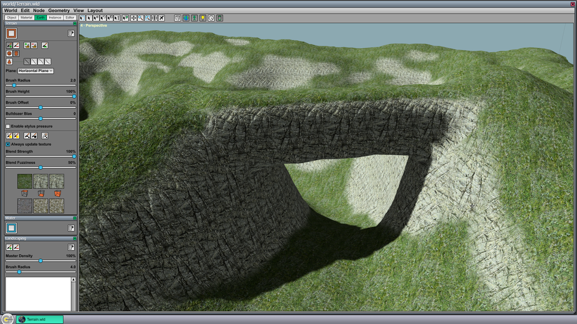
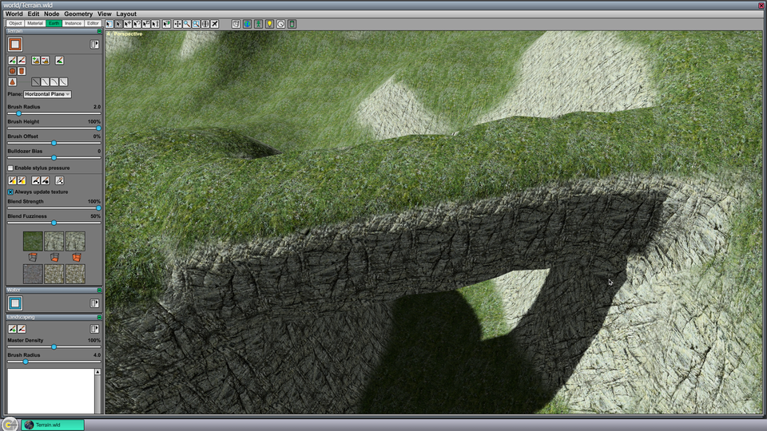
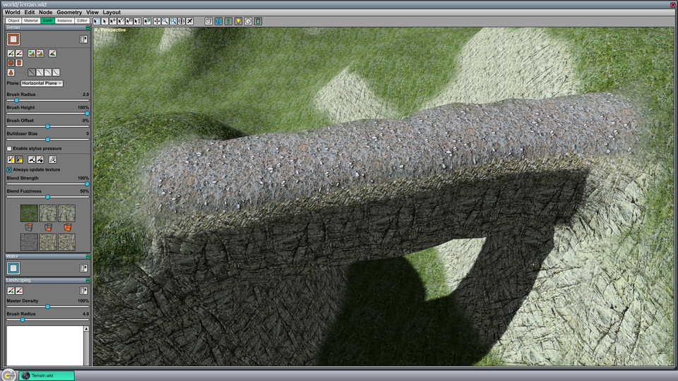
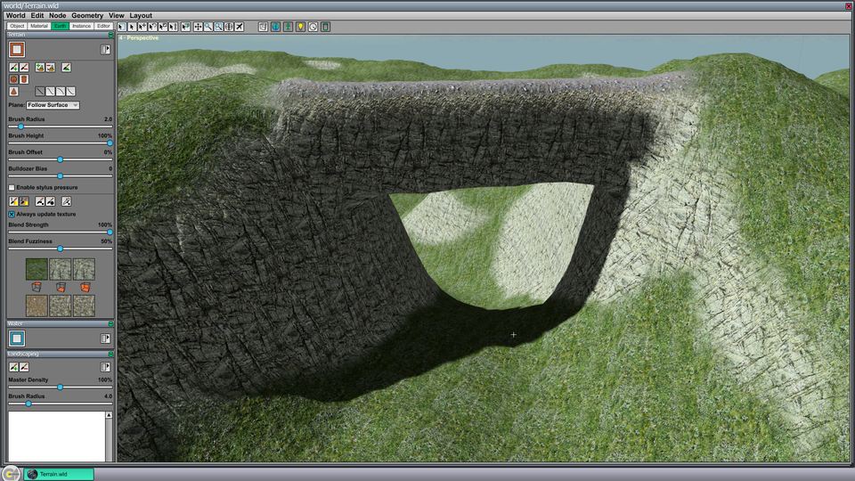
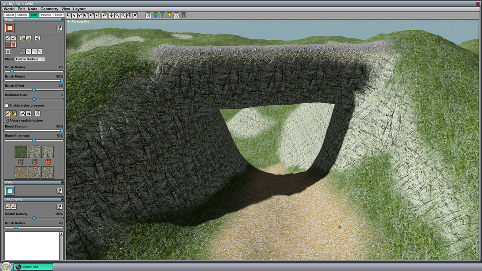

Terrain Tutorial
This tutorial guides you through the creation of a new terrain block and some basic terrain editing operations. For more general information about the terrain tools, see the Terrain article.
To follow this tutorial, you need the Data/Tutorial/world/Terrain.wld file that is included in the C4 Engine distribution.
To enlarge any of the screenshots below, click on the thumbnail icon below the image.
Step A: Open Terrain.wld
Open Data/Tutorial/world/Terrain.wld in the World Editor by typing Ctrl-O or by entering world world/Terrain into the Command Console. The World Editor should contain a nearly empty scene that looks like the screenshot shown in Figure 1. A skybox, infinite light, and physics node have already been added to the world.
{kind=link}

Step B: Draw the Terrain Block
Select the Terrain Block tool in the Terrain Page under the Earth tab. In the Top viewport (the upper-left viewport), click on the origin and drag out a box that is 4 large grid squares on each side. The grid settings have been set up in this world so that each small grid square is 10 meters, and thus 4 large grid squares corresponds to 400 meters (or about a quarter mile). When you release the mouse button, a dialog box appears as shown in Figure 2.
{kind=link}

Select Import TGA Height Field from the Terrain Builders list. We are going to initialize the terrain block with height data from a grayscale .tga file. For the Height field image file setting, select the file Tutorial/terrain/Terrain.tga (which is located inside the Import folder). This file contains the height field used in an old demo level. To match the same vertical scale as in the demo, enter 80.0 in the Height scale (distance) setting. Click OK, and after a couple seconds, the scene should appear as shown in Figure 3.
{kind=link}

Step C: Draw a Bridge
Type Ctrl-4 to make the Perspective viewport fill the editor window. Hold in the right mouse button in the Perspective viewport and use the WSAD keys to fly the camera closer to the terrain. Steer to the right slightly so that the small gully near the right end of the terrain is centered in the viewport as shown in Figure 4.
{kind=link}

Select the Additive Brush tool from the Terrain Page and make sure that the Cylindrical Brush shape is selected and the Horizontal Plane drawing plane is selected. We are going to draw a horizontal bridge connecting the left and right sides of the small gully visible in the perspective viewport. With the Additive Brush selected, click in the perspective viewport on one side of the gully at the height where the vertical center of the bridge should be. Hold the mouse button down and drag to the other side of the gully. The result should look like what is shown in Figure 5. You can undo with Ctrl-Z and redraw the bridge as many times as you like.
{kind=link}

Step D: Apply Different Textures
Position the perspective viewport's camera so that you have a better view of the top of the bridge you just created. Select the Secondary Blend Brush tool in the Terrain Page, and select the Spherical Brush shape. Make sure that the Blend Strength slider is moved to the right so that a high percentage is displayed. This slider controls how the primary and secondary texture sets are blended together, with 0% being only the primary set, 100% being only the secondary set, and anything in between being a blend of the two sets.
Click the leftmost texture in the secondary texture set. This is the texture applied to top-facing horizontal surfaces. Click on the top-right texture from the palette that appears to select a gray cinder/stones texture map. The editor window should now appear as shown in Figure 6.
{kind=link}

With the Secondary Blend Brush tool still selected, click on one end of the top of the bridge and drag to the other end. The ground texture should change to stone as shown in the Figure 7. You may undo and redraw the texture if necessary.
{kind=link}

Now reposition the camera so that you can see beneath the bridge. Change the drawing plane to Follow Surface in the Terrain Page as shown in Figure 8. Click on the leftmost texture in the secondary texture set again, and select the brown dirt texture map.
{kind=link}

Click on the ground close to the camera and drag the mouse down through the center of the gully. The brush will follow the terrain surface and change the texture of the surface beneath it. You can use multiple brush strokes or drag the brush back and forth to make the path wider. The scene should look like the image shown in Figure 9.
{kind=link}
